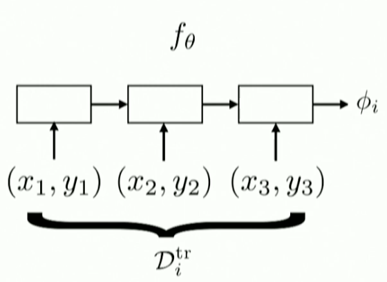

MetaLearning Learning Note - 2
Stanford CS330: Multi-Task and Meta-Learning, 2019 | Lecture 3 - Optimization-Based Meta-Learning
- Recap the probabilistic formulation of meta-learning
- general recipe of meta-learning algorithm
- black box adaption appraoches
- optimization-based meta-learning algorithm
Recap
meta-learning to learn the $\theta$ then to learn $\phi$ in train dataset.
We will use omniglot dataset. 1623 characters 50 different alphabets.
In her’s introduction to the meta-supervised learning:
Input is the $D_{tr}, x_{test}, \theta$
The steps to design a meta-learning algorithm
- choosing a form of $p(\phi | D^{TR}_i,\theta)$
- choosing how to optimizae $\theta$
Treat $p(\phi | D^{TR}_i,\theta)$ as a inference problem?
Black-Box adaption

we ca see we use $D^{tr}_i$ to train data and generate the results parameters $\phi$
In my opinion, they train $\theta$ to generate $\phi_i$ then use the use $\phi_i$ to generate $y^{test}$ we need to let this loss to get minimized!
Yes the step of black box training:
- sample task $T_i$
- sample disjoint dataset $D^{tr}_i,D^{test}_i$
- Compute $\phi \leftarrow f_{\theta}{D^{tr}_i}$
- Update $\theta$ using $\Delta_{\theta}\mathbb{L}(\phi,D^{test})$
Challenge:
Output all neural net parameters doest not seem scalable.
We only ouput sufficient statistics (SNAIL!) Oh I read this paper but I don’t understand. Let me try to review this paper tommorrow.
The first Homework is omnigenet.
The proble of Black-Box adaption need a large number of meta-learning dataset. - data inefficent.
Optimiation Based Inference
Motivation: in the above problem, to let the $\theta$ become scalable, we only genereate several fixed parameter from our meta-learner. How can we genereate all parameters?
First we get the formula:
$$max_{\phi_i}logP(D_i^{tr}|\phi_i)+logp(\phi_i|\theta)$$
whye $\theta$ in the behind of the formula?
meta parameter are server as prior parameter. ( Recap: Fine-tune your parameters in the test data set!)
Pre-training can be taken as art more than others.
Our goal:
$$min_\theta\sum_{task\ i}$$
and MAML:
key idea: acquire $\phi_i through optimization$
- Sample task $T_i$
- Sample disjoint datasets $D^{tr}_i$,$D^{test}_i$ from $D_i$
- Optimize $\phi_i \leftarrow \theta - \alpha \nabla_\theta L(\theta,D^{tr}_i)$
- use $\phi$ from step 3’s trainging to update $\theta$
Specificly, the phi is theta its self. And MAML summarized alll task’s gradient to do a ‘the whole gradient steps’ to find the best value.
Shall we care the second order derivative?
Follow her formula:
$$\phi = u(\theta, D^{tr})\ d: total\ derivative\ and \bigtriangledown : partial derivative$$
$$ min_\theta L(\phi,D^{test}) = min_\theta(u(\theta,D^{tr}),D^{test}) $$
Let us see the GD process of this formula.
$$\frac{d}{d_\theta}L(\phi,D^{test}) = \bigtriangledown_\phi * L(\phi,D^{test}) \circ d_{theta} u(\theta,D^tr) _{\phi = u(\theta,D^tr)}$$
I consider the first derivative for $\phi$ is second derivative for $\theta$?
Let $u(\theta,D^tr) = \theta - \alpha * d_\theta * L(\theta, D^tr)$
$d_\theta u(\theta, D^tr) = I - \alpha * d_\theta^2 * L(\theta, D^tr)$ is a hessian matrix for this problem.
I am a little confused about the $\phi & \theta$ who is the meta-parameters?
So it can repeate computing the higher-order derivations.